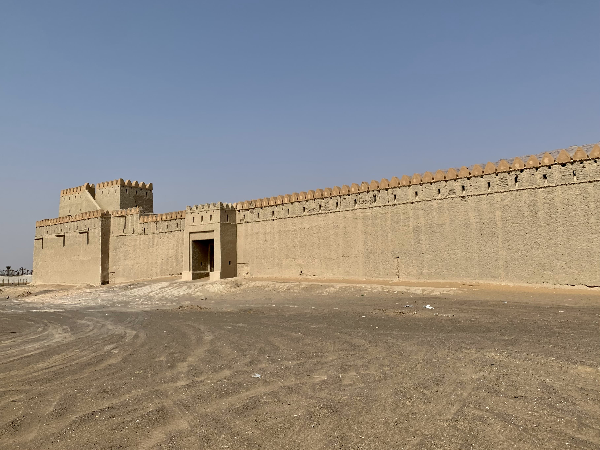
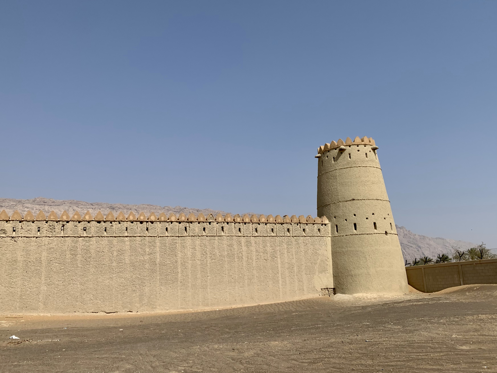

يقع الحصن في مزيد شرق جبل حفيت، قرب المنفذ الحدودي. بنيت في القرن التاسع عشر، بناها قوم المزايدة. كانت قبل عقود مركزًا للشرطة ثم رممتها دائرة الآثار والسياحة.
كانت في المنطقة سابقًا ثلاثة حصون قريبة، ثم لما رممها الشيخ زايد رحمه الله ضمَّها في قلعة واحدة (*).
 الطريق المؤدي إلى الحصن رمليٌّ وعر، وهو الآن مغلق للصيانة والترميم.